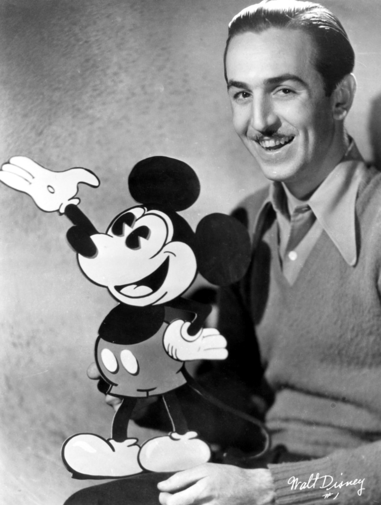
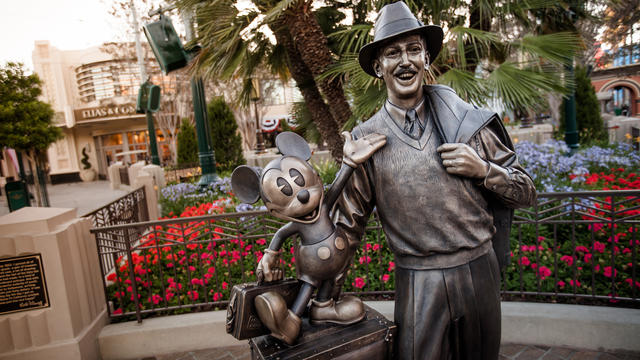

Kristen's Canvas
Artist Statement
Over the years, my work has progressed from mere beginnings to hopeful realities. Throughout the 2018-2019 school year, I have definitely learned a lot about who I am as a person through my artwork, and how my work influences my aspirations throughout life. Various projects I have gotten the pleasure of pursuing over time include that of Digital Collage, 3D Mashup, Video, Processing, and my own personal website. Most of my projects are inspired by my personal interest in Walt Disney. Ever since I was young, I have always had a passion for Disney and the stories, films, and characters that have been come to life. It has been my dream to pursue a career in the field of Digital Media Design and Film in Hollywood, hence I inspire my projects based on what I love and hope to gain in the future. I hope my audience can become inspired by my artwork by realizing that anything is possible if you set your mind to it. By creating colorful mediums and imaginary lifestyles, I design my work as a vision for what the world has to offer. The projects presented in my portfolio are just a stepping stone to where I hope to be after graduating college, and I hope that I am able to create more complex pieces as I gain more knowledge in various programs. By capturing the essence of Walt Disney, I hope to engage others into finding their happiness in the world and realizing that if you wish for something hard enough, they just might come true.

